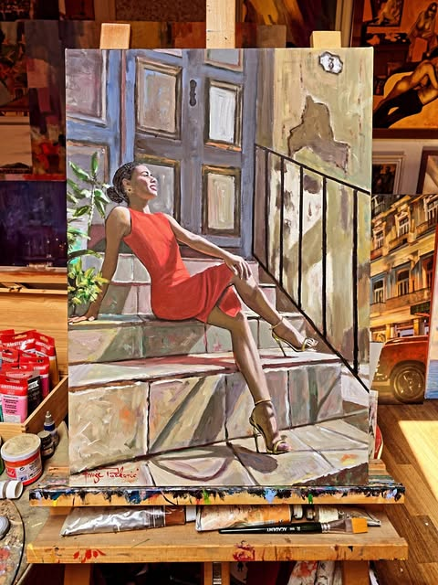
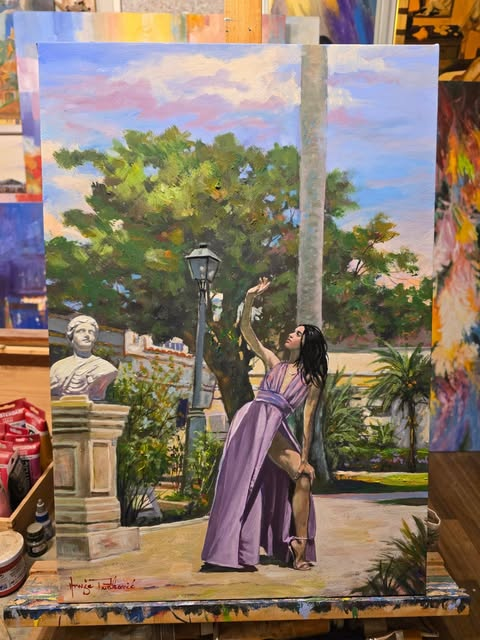
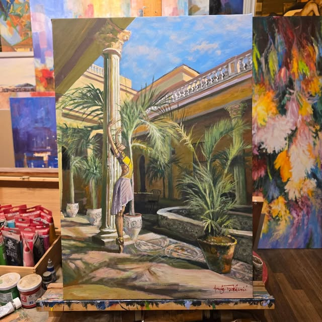
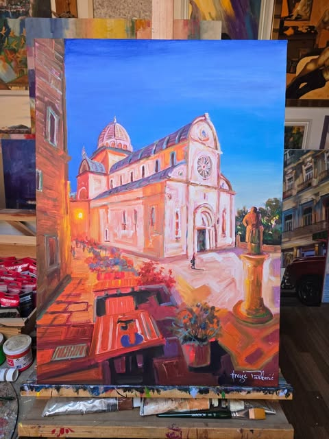
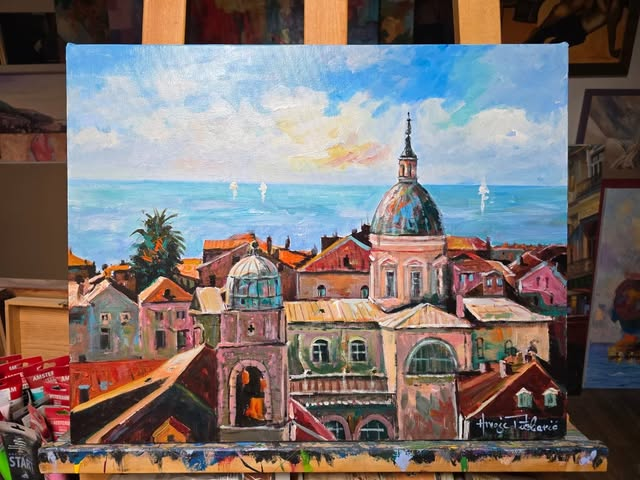
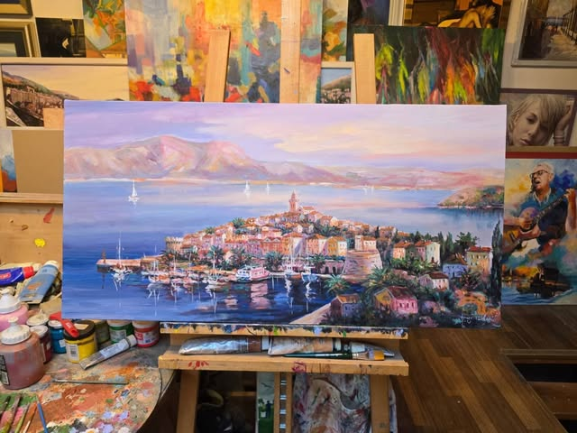

Akademski slikar · Zagreb
Slikar baleta, flamenca i mediteranskog svjetla. Više od pedeset izložbi u Hrvatskoj i inozemstvu — od Zagreba i Seville do Havane.
O umjetniku
Hrvoje Puškarić rođen je u Zagrebu 1975. godine. Nakon Škole primijenjenih umjetnosti i dizajna, 1998. diplomirao je slikarstvo na Akademiji likovnih umjetnosti u Zagrebu, u klasi profesora Josipa Vasilija Jordana.
Školovanje nastavlja u Španjolskoj — kao stipendist Veleposlanstva Kraljevine Španjolske upisuje poslijediplomski studij na Akademiji lijepih umjetnosti u Sevilli, gdje 2000. godine završava doktorski studij slikarstva pejzaža u klasi profesorice Carmen Manero.
Najveću inspiraciju, uz Hrvatsku, pronalazi u španjolskim plesovima te na studijskim putovanjima po Andaluziji i Kubi. Iz suradnje s plesačima Kubanskog nacionalnog baleta nastao je njegov najpoznatiji ciklus — Ballet Clásico y Pasión. Njegova djela nalaze se u brojnim privatnim kolekcijama u zemlji i inozemstvu.
Galerija
Figurativni izraz i snažan kolorizam — od svjetla Havane do dalmatinske obale.

Kuba i ples

Kuba i ples

Kuba i ples

Mediteran · Šibenik

Mediteran

Mediteran
Fotografije djela preuzete s umjetnikova Instagram profila · nazivi slika su radni
„Želio sam kroz svoje oči prikazati ljepotu kubanskog baleta — i snagu boja prisutnih u svakodnevnom životu Kube."— Hrvoje Puškarić
Izložbe i priznanja
Više od pedeset samostalnih i skupnih izložbi u Hrvatskoj i inozemstvu. Djela mu se nalaze u privatnim kolekcijama istaknutih osoba iz svijeta kulture i sporta.
Kontakt
Za upite o dostupnim slikama, narudžbama portreta ili izložbama, slobodno se javite.